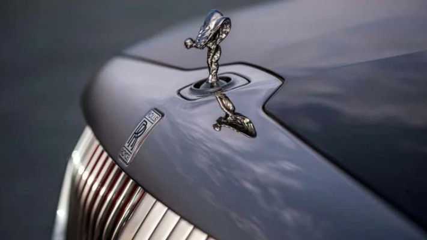
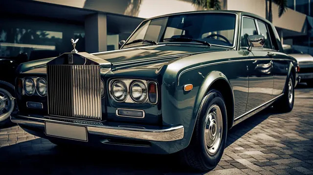

Mỗi chi tiết trong thiết kế logo Rolls-Royce đều mang một ý nghĩa riêng. Tay phải của người phụ nữ giơ cao, tượng trưng cho sự chiến thắng và thành công. Chiếc khăn voan tung bay trong gió, tượng trưng cho sự tự do và phóng khoáng. Bức tượng được đặt trên một tảng đá, tượng trưng cho sự vững vàng và kiên định.

Chiếc Silver Ghost đầu tiên ra đời, đánh dấu một kỷ nguyên mới cho ngành công nghiệp ô tô.
Chiến tranh thế giới: Rolls-Royce chuyển hướng sản xuất sang các động cơ máy bay, đóng góp lớn cho chiến thắng của đồng minh.
Sau chiến tranh: Công ty tiếp tục phát triển, sản xuất cả xe ô tô và động cơ máy bay.
Thủ tướng nước này đã quốc hữu hóa Rolls-Royce Limited để cứu lấy công ty bằng cách tách bộ phận sản xuất động cơ máy bay bán cho hãng Vickers PLC năm 1980.

Tên hãng được đổi thành Rolls-Royce Motor Cars Limited và nhanh chóng bị Volkswagen mua lại với số tiền 430 triệu Bảng. Biểu tượng Spirit of Ecstasy cùng với bản quyền lưới tản nhiệt của Rolls-Royce sau đấy lại bị VW nhượng lại cho BMW.
Dưới sự dẫn dắt của BMW: Rolls-Royce tập trung vào sản xuất các mẫu xe siêu sang, kết hợp giữa truyền thống và công nghệ hiện đại.
Các mẫu xe nổi bật: Phantom, Ghost, Wraith, Cullinan. Công nghệ: Rolls-Royce không ngừng đổi mới, trang bị cho xe những công nghệ tiên tiến nhất, mang đến trải nghiệm lái xe đẳng cấp. Rolls-Royce - biểu tượng của sự hoàn hảo
Rolls-Royce không chỉ là một thương hiệu xe hơi, mà còn là biểu tượng của sự sang trọng, đẳng cấp và thành công. Với lịch sử lâu đời và những nỗ lực không ngừng, Rolls-Royce đã khẳng định vị thế của mình trong làng xe hơi thế giới